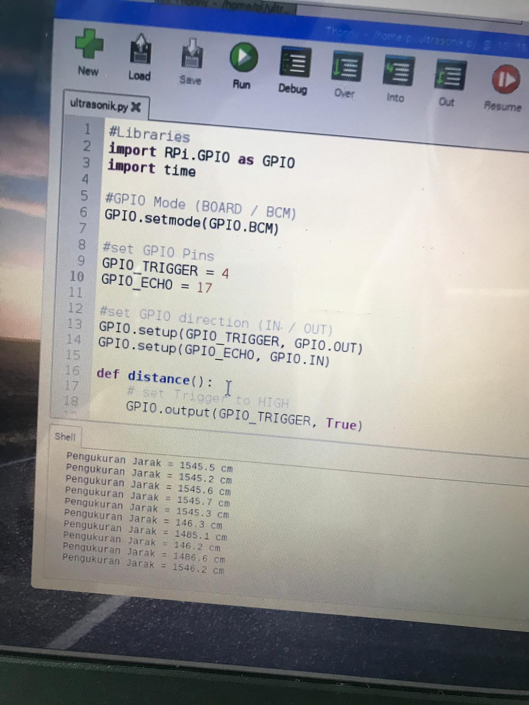
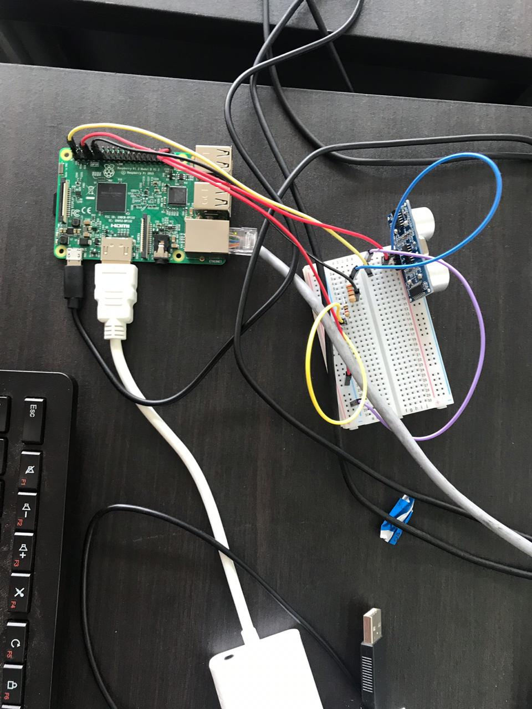
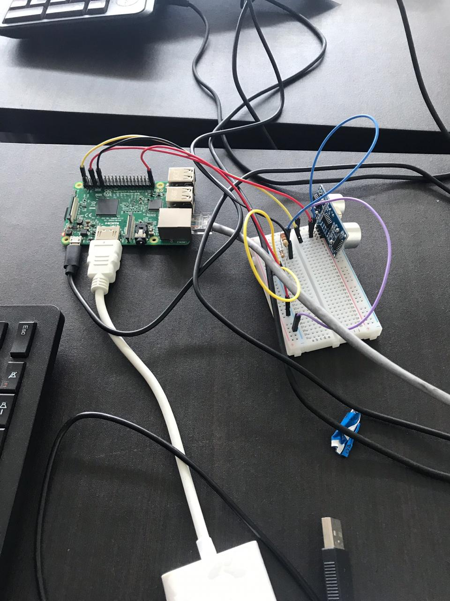

Kode Program
foto Pengerjaan Projek
 video Pengerjaan Projek
Kode Program
import RPi.GPIO as GPIO import time #GPIO Mode (BOARD / BCM) GPIO.setmode(GPIO.BCM) #set GPIO Pins GPIO_TRIGGER = 4 GPIO_ECHO = 17 #set GPIO direction (IN / OUT) GPIO.setup(GPIO_TRIGGER, GPIO.OUT) GPIO.setup(GPIO_ECHO, GPIO.IN) def distance(): # set Trigger to HIGH GPIO.output(GPIO_TRIGGER, True) # set Trigger after 0.01ms to LOW time.sleep(0.00001) GPIO.output(GPIO_TRIGGER, False) StartTime = time.time() StopTime = time.time() # save StartTime while GPIO.input(GPIO_ECHO) == 0: StartTime = time.time() # save time of arrival while GPIO.input(GPIO_ECHO) == 1: StopTime = time.time() # time difference between start and arrival TimeElapsed = StopTime - StartTime # multiply with the sonic speed (34300 cm/s) # and divide by 2, because there and back distance = (TimeElapsed * 34300) / 2 return distance if __name__ == '__main__': try: while True: dist = distance() print ("Pengukuran Jarak = %.1f cm" % dist) time.sleep(1) # Reset by pressing CTRL + C except KeyboardInterrupt: print("Pengukuran dihentikan") GPIO.cleanup()